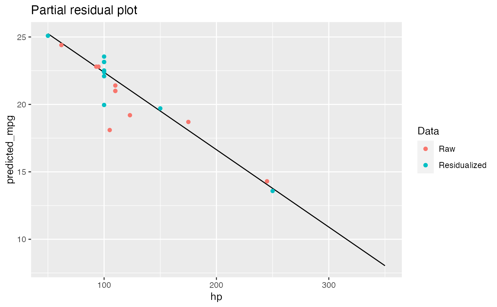

Get raw data for plotting with model predictions
Usage
get_data_for_grid(grid, model, residualize = FALSE, collapse_by = FALSE, ...)
# S3 method for data.frame
get_data_for_grid(
grid,
model,
residualize = FALSE,
collapse_by = FALSE,
pred_name,
...
)
# S3 method for ggeffects
get_data_for_grid(
grid,
model,
residualize = FALSE,
collapse_by = FALSE,
protect_names = TRUE,
...
)
# S3 method for emmGrid
get_data_for_grid(
grid,
model,
residualize = FALSE,
collapse_by = FALSE,
protect_names = TRUE,
...
)
# S3 method for predictions
get_data_for_grid(grid, model, residualize = FALSE, collapse_by = FALSE, ...)Arguments
- grid
A data grid with predictions
- model
The statistical model
- residualize
Should data be residualized?
- collapse_by
Name of grouping variable to collaple across. If
TRUEname of grouping variable is automatically detected from the model.- ...
Args passed from / to other functions.
- pred_name
Name of column that has the predictions in the data grid
- protect_names
Logical, if
TRUE, preserves column names from theggeffectsobject.
Examples
data("mtcars")
mtcars <- mtcars |> transform(cyl = factor(cyl))
mod <- lm(mpg ~ hp + cyl, data = mtcars[1:10, ])
nd <- expand.grid(
hp = seq(50, 350, by = 50),
cyl = "4"
)
nd$predicted_mpg <- predict(mod, newdata = nd)
get_data_for_grid(nd, mod)
#> Warning: 'get_data_for_grid()' is experimental.
#> mpg hp cyl
#> Mazda RX4 21.0 110 6
#> Mazda RX4 Wag 21.0 110 6
#> Datsun 710 22.8 93 4
#> Hornet 4 Drive 21.4 110 6
#> Hornet Sportabout 18.7 175 8
#> Valiant 18.1 105 6
#> Duster 360 14.3 245 8
#> Merc 240D 24.4 62 4
#> Merc 230 22.8 95 4
#> Merc 280 19.2 123 6
get_data_for_grid(nd, mod, residualize = TRUE, pred_name = "predicted_mpg")
#> cyl hp predicted_mpg
#> Mazda RX4 6 100 23.14580
#> Mazda RX4 Wag 6 100 23.14580
#> Datsun 710 4 100 22.39857
#> Hornet 4 Drive 6 100 23.54580
#> Hornet Sportabout 8 150 19.70311
#> Valiant 6 100 19.95907
#> Duster 360 8 250 13.58271
#> Merc 240D 4 50 25.08816
#> Merc 230 4 100 22.51327
#> Merc 280 6 100 22.09131
library(ggplot2)
ggplot(nd, aes(hp, predicted_mpg)) +
geom_line() +
geom_point(aes(y = mpg, color = "Raw"),
data = get_data_for_grid(nd, mod)
) +
geom_point(aes(color = "Residualized"),
data = get_data_for_grid(nd, mod, residualize = TRUE, pred_name = "predicted_mpg")
) +
labs(
title = "Partial residual plot",
color = "Data"
)

## Support of data-grid packages ------
# - ggeffects
# - emmeans
# - marginaleffects
pred_ggeffects <- ggeffects::ggpredict(mod, c("hp [50:350, by = 50]", "cyl [4]"))
get_data_for_grid(pred_ggeffects, residualize = TRUE)
#> group x predicted
#> Mazda RX4 6 100 23.14580
#> Mazda RX4 Wag 6 100 23.14580
#> Datsun 710 4 100 22.39857
#> Hornet 4 Drive 6 100 23.54580
#> Hornet Sportabout 8 150 19.70311
#> Valiant 6 100 19.95907
#> Duster 360 8 250 13.58271
#> Merc 240D 4 50 25.08816
#> Merc 230 4 100 22.51327
#> Merc 280 6 100 22.09131
at <- list(hp = seq(50, 350, by = 50), cyl = "4")
pred_emmeans <- emmeans::emmeans(mod, ~ hp + cyl, at = at)
get_data_for_grid(pred_emmeans, mod, residualize = TRUE)
#> cyl hp emmean
#> Mazda RX4 6 100 23.14580
#> Mazda RX4 Wag 6 100 23.14580
#> Datsun 710 4 100 22.39857
#> Hornet 4 Drive 6 100 23.54580
#> Hornet Sportabout 8 150 19.70311
#> Valiant 6 100 19.95907
#> Duster 360 8 250 13.58271
#> Merc 240D 4 50 25.08816
#> Merc 230 4 100 22.51327
#> Merc 280 6 100 22.09131
# pred_marginaleffects <- marginaleffects::predictions(mod, newdata = nd)
# get_data_for_grid(pred_marginaleffects, residualize = TRUE)
## Collapes across group ------
fm1 <- lme4::lmer(angle ~ temperature + (1 | recipe),
data = cake
)
pred_ggeffects <- ggeffects::ggpredict(fm1, c("temperature", "recipe"))
nd <- marginaleffects::datagrid(
temperature = unique(cake$temperature),
model = fm1
)
pred_marginaleffects <- marginaleffects::predictions(fm1, newdata = nd)
get_data_for_grid(pred_marginaleffects, collapse_by = TRUE)
#> Error in `[.data.frame`(grid, c(unlist(attr(grid, "variables")), "predicted")): undefined columns selected
# get_data_for_grid(pred_marginaleffects, collapse_by = TRUE, residualize = TRUE)